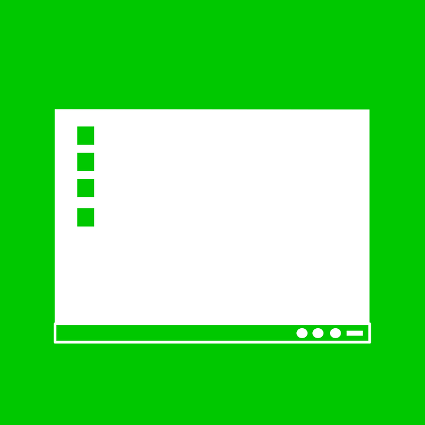

| Actividad | hacer click aquí |
|---|---|
| Actividad #1: digitalización de fotografias |  |
| Actividad #2: enfoque, imagen, tipos de ángulos, etc. | |
| Actividad #3: video fauna | |
| Actividad #4: investigación de tipos de audio | |
| Actividad #5 pantalla de Corel Draw | |
| Actividad #6: Ejercicios de Corel Draw | |
| Actividad #7: video tema libre | |
| Actividad #8: APP tema libre |
Digitalización de fotografíasEsta actividad se basa en tomar fotografías a el domo del plantel, después las dibujamos y finalmente las digitalizamos en formato PNG.
|
|---|
{kind=link}
{kind=link}
{kind=link}

Enfoque, imagenes, tipos de ángulos, etc. Esta actividad se basó en realizar una investigación sobre los tipos de fotografías así como los tipos de ángulos, colores, luz, distancia, etc. Después de esto hicimos una expocisión con ayuda de unas diapositivas.
|
Video fauna En esta actividad cada equpo salió a realizar una serie de tomas fotográficas, nuestro tema fue la "Fauna", y con esto realizar un vídeo que podrán ver dando clik aqui |
tipos de audio hablamos sobre algunos de los tipos de audios que existen y sus carácteristicas |
Pantalla Corel Draw Esta actiividad se basó en tomar una captura de la pantalla principal de este programa y explicar sus funciones |
Ejercicios Corel Draw En este trabajo hicimos por medio del programa unos ejercicios que nos pedia una guia que el maestro nos proporcionó, siguiendo cada paso
|
||||||||||||||||||||||||
Video tema libre En este trabajo la tarea era realizar un mix, utilizando el mezclador de músicas y ponerlas de fondos a videos alternos, decidimos hacerlo sobre videos virales en redes sociales, mezclando de igual forma musicas populares en memes |
App tema libre esto se trata en crear una aplicación como actividad final. mi aplicación se basa en poder tener un sitio en el que podamos compartir el proyecto que tenemos en mente, pero no lo podemos desempeñar ya sea por falta de capital o experiencia en desarrollos de proyectos. Gracias a este foro podremos encontar algún patrocinador o socio, al que le interese nuestra idea y quera realizar una inversión en él ó trabajarlo junto a el autor del proyecto. |